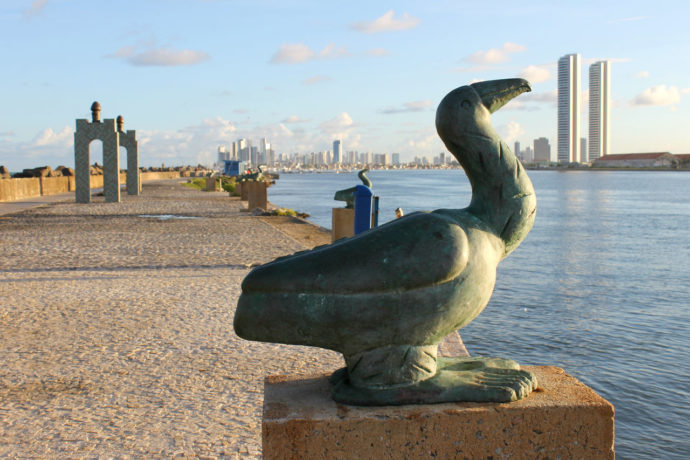
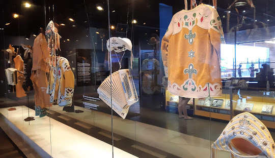

RECIFE
Recife é um dos melhores destinos do Brasil para fazer turismo cultural e ainda oferece boa praia e ótimos passeios bate-volta.

RECIFE ANTIGO
O nome oficial é Bairro do Recife, mas todo mundo chama mesmo é de Recife Antigo ou, quando começa a intimidade, só “Antigo” mesmo. E apesar de ser um dos principais cartões postais recifenses, o bairro não é só pra turista ver: ele também é o maior polo tecnológico e um dos principais centros de lazer e cultura da cidade.
MARCO ZERO
O Marco Zero, na Praça Rio Branco, é conhecido como local de fundação da cidade do Recife e também como ponto inicial de contagem das distâncias calculadas a partir da cidade. O lugar é um dos pontos mais importantes na capital Pernambucana, pois é também uma região de forte movimento durante o Carnaval. Aproveite sua visita para tirar uma foto com os dois marcos (o antigo e o novo), observar a vista para o Parque de Esculturas e os edifícios do Centro Cultural da Caixa e da Associação Comercial de Pernambuco. Se quiser fazer compras, vale a pena visitar o novo Mercado de Artesanato, que também fica no local. A praça é banhada pelo estuário do Rio Capibaribe e ao se aproximar da beira provavelmente você vai ver barqueiros querendo levá-lo até o outro lado; a travessia custa em torno de R$ 10 (ida e volta) por pessoa e é um bom passeio caso você tenha curiosidade de ver de perto algumas das obras do artista e não tenha tempo de ir até sua oficina, ou caso você seja como eu e adore passeios de barco, mesmo que curtinhos, e queira ver o Marco Zero de outro ângulo.

PRAÇA DO ARSENAL
É onde fica a Torre Malakoff, espaço cultural que abriga exposições, um observatório astronômico e um mirante. Nos finais de semana às vezes é colocado um palco ali, com bandas e apresentações de dança, mas o destaque permanente da praça é o Paço do Frevo, outro museu de dar orgulho. Dedicado à perpetuação da memória desse ritmo tão pernambucano, o museu traz fotos, estandartes, janelonas com trechos de músicas icônicas e até um Glossário do Carnaval, explicando o significado de termos como “evoé” e “abre-alas”. Se não sair de lá apaixonado pelo frevo e doido pra marcar uma próxima visita a Pernambuco pra época do Carnaval, no mínimo você vai levar fotos lindas de recordação.

CAIS DO SERTÃO
Construído no local de antigos armazéns do Porto do Recife, o Cais do Sertão oferece aos visitantes exposições temporárias e acervo permanente, com referências à cultura sertaneja da região Nordeste, com experiências sensoriais e arquitetura inovadora, em edificação que exprime em seus traços a união do litoral com o sertão. Superinterativo e lindo, ele mistura o tradicional e o moderno pra retratar a cultura do Sertão nordestino e a vida do grande Luiz Gonzaga.
